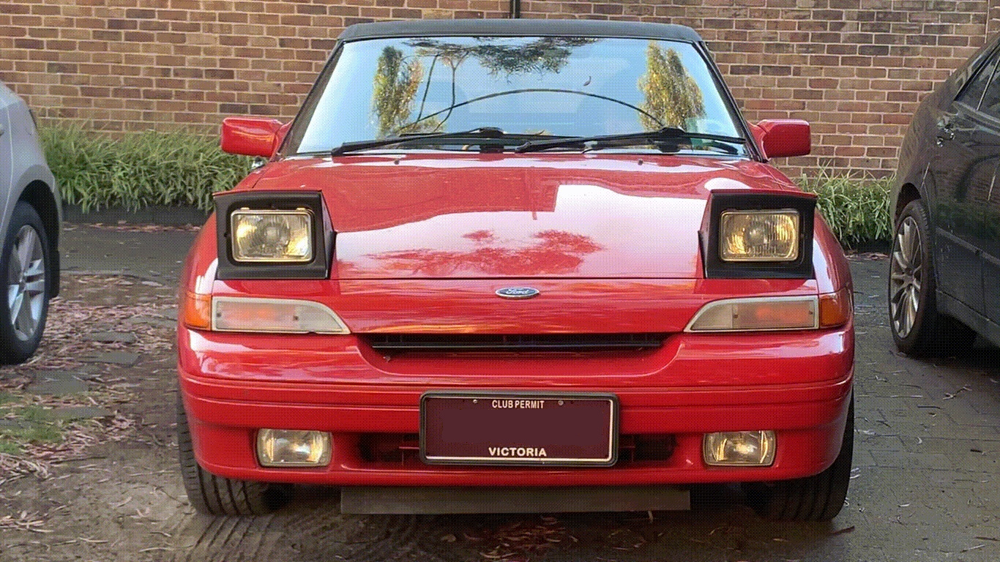
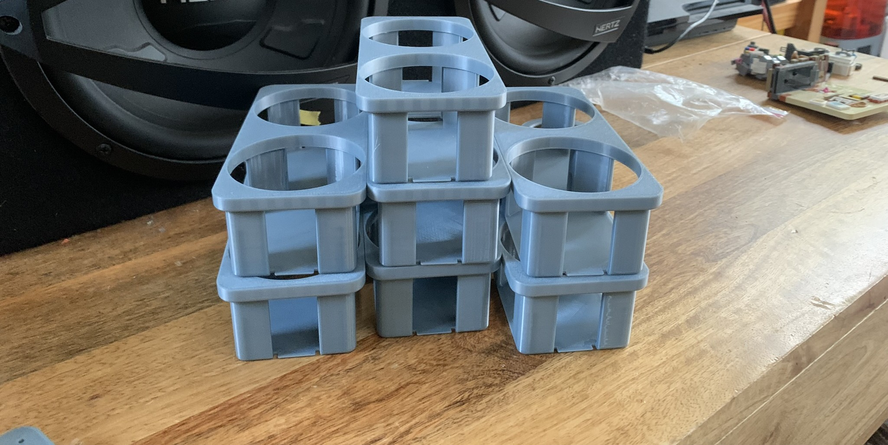
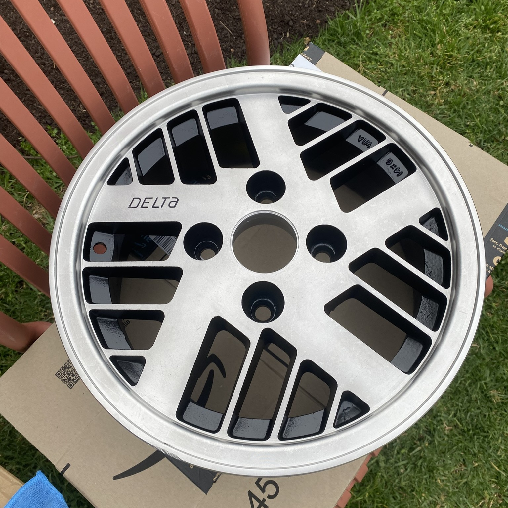

Headlight Wink Controller
Project
An Arduino-based controller and custom OEM-style switch to operate the pop-up headlights individually, enabling a selectable “wink” function.

An Arduino-based controller and custom OEM-style switch to operate the pop-up headlights individually, enabling a selectable “wink” function.

Reverse-engineered a broken, discontinued climate control linkage and designed a replacement for the Ford Capri; produced and sold 21 units to other owners.

The 1989-93 Ford Capri never came with a cupholder, just a rectangular hole where it looks like one should be. I designed and 3D printed a solution, selling 19 units to other Capri owners.
A Quadlock compatible phone mount for the Ford Capri.

A restoration of four alloy car rims.
Recreating missing centre caps for the Ford Capri.